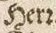

Level 2 und 3
Für das sogenannte runde r steht die Unicode-Entität ꝛ (U+A75B, LATIN SMALL LETTER R ROTUNDA). Es findet sich häufig in Zusammenhang mit dem heute gebräuchlichen r oder als et-Substituent in Abkürzungen für et cetera.
| Vorlage | Transkription |
|---|---|
|  | Herꝛ |
 |
ꝛc. |